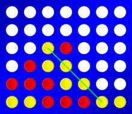

4 Gewinnt

⚠️ Download Code
Hier kannst du den vorgefertigten Code runterladen. (wenn du es noch nicht gemacht hast.)
Entpacke das zip archiv mit Rechtsklick und nutze die vorgefertigten Dateien.
Du musst nur in die ki_four_wins.py Datei gucken.
wie bei Tic Tac Toe - Ziele
Die Ziele beim Entwickeln eurer KI sind die folgenden:
-
gewinne gegen Gegner die zufällig spielen
-
gewinne gegen Menschen die optimal spielen
Vorbereitungen
Das Spielfeld habe ich schon programmiert.
Das ist einfach eine Liste in einer Liste:
leeres Feld
feld = [
["_", "_", "_", "_", "_", "_", "_"],
["_", "_", "_", "_", "_", "_", "_"],
["_", "_", "_", "_", "_", "_", "_"],
["_", "_", "_", "_", "_", "_", "_"],
["_", "_", "_", "_", "_", "_", "_"],
["_", "_", "_", "_", "_", "_", "_"]
]
--> [
["_", "_", "_", "_", "_", "_", "_"],
["_", "_", "_", "_", "_", "_", "_"],
["_", "_", "_", "_", "_", "_", "_"],
["_", "_", "_", "_", "_", "_", "_"],
["_", "_", "_", "_", "_", "_", "_"],
["_", "_", "_", "_", "_", "_", "_"]
]
Wenn man jetzt in ein Feld schreiben will, muss man nur die Spalte angeben.
Das X wird automatisch in die unterste Position geschrieben!
feld[0] = 'X'
print(feld)
--> [
["_", "_", "_", "_", "_", "_", "_"],
["_", "_", "_", "_", "_", "_", "_"],
["_", "_", "_", "_", "_", "_", "_"],
["_", "_", "_", "_", "_", "_", "_"],
["_", "_", "_", "_", "_", "_", "_"],
["X", "_", "_", "_", "_", "_", "_"]
]
⚠️ Die Nummerierung beginnt wie immer bei 0!
Das Spiel wird gestartet mit:
spiel = FourWins(x=input_player, o=random_player)
spiel.start()
Spieler x fängt immer an.
Es gibt 3 Spielertypen:
-
random_spieler
Dieser Spieler spielt zufällig. Diesen habe ich schon implementiert.
-
input_player
Wenn du das auswählst kannst du selbst spielen, indem du in die Konsole die Koordinaten schreibst, z.B. 1,2
Dieser Spieler ist auch schon implementiert.
-
ki_player
Den Spieler sollst du selbst schreiben. Dieser Spieler soll dann optimal spielen und nie verlieren.
ki_player(field, symbol): programmieren
-
Der KI-Player gibt eine Koordinate zurück.
Zum Beispiel sagt er, dass in die zweite Spalte reingeworfen werden soll. (Zählung begint bei 0!)
return 1 -
Der KI-Spieler bekommt das Feld und sein eigenes Symbol.
Vorgehen zum Programmieren des KI-Spielers
-
Um zu entscheiden wohin der ki-spieler als nächstes sein Symbol setzt:
-
gehe das Feld durch und gucke dann wohin du setzen musst
z.B. wenn der Gegner drei in einer Reihe hat, musst du in das letzte freie Feld in dieser Zeile setzen
-
bei diesem Vorgehen kannst du alle möglichen Fälle mit einer if-Abfrage einfach abtippen
-
gucke nach Zeilen, Spalten und wenn du Zeit hast auch Diagonalen
-
fange auch typische Fallen ab wie z.B. X X _ X (keine 3 nebeneinander und gewinnt trotzdem im nächsten Zug) oder _ X X X _ (dort hat man zwei Möglichkeiten zu gewinnen und kann es nicht verhindern)
-
Testen deiner KI
KI vs Du
spiel = FourWins(x=ki_player, o=input_player)
spiel.start()
KI vs zufälliger Spieler
test_durchlauf(x=ki_player, o=random_player, n=100)
Damit kannst du automatisch 100 Runden gegen einen zufälligen Spieler spielen und sehen wie oft deine KI verloren hat. Wenn du nie verlierst ist deine KI perfekt.
Deine KI vs KI von Mitschüler
Wenn du nur eine Statistik willst, welche KI besser ist, kannst du wie folgt vorgehen:
-
kopiere den Code aus ki_player von deinem Mitschüler in ki_player2 rein
-
rufe folgendes auf:
test_durchlauf(x=ki_player, o=ki_player2, n=100) -
damit hast du nur eine Statistik wie oft du gewonnen hast
Wenn du verfolgen willst, wie die KIs gegeneinander spielen gehe wie folgt vor:
-
kopiere den Code aus ki_player von deinem Mitschüler in ki_player2 rein
-
rufe folgendes auf:
spiel = FourWins(x=ki_player, o=ki_player2) spiel.start()